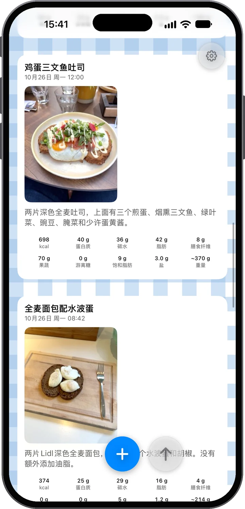
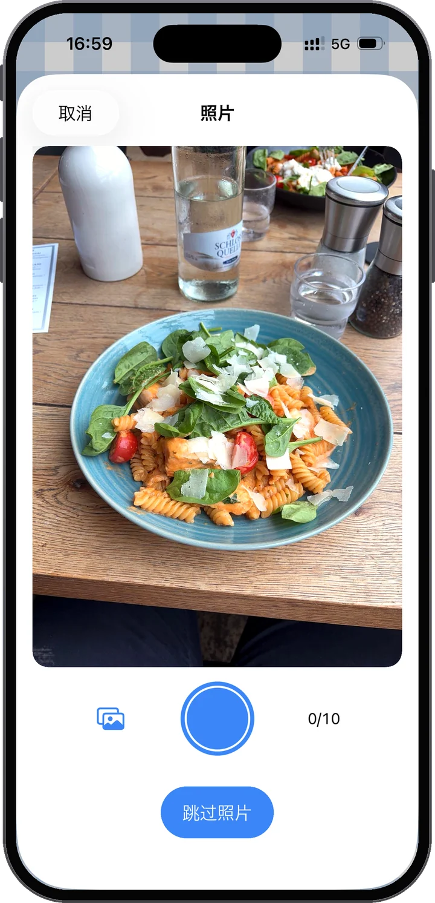
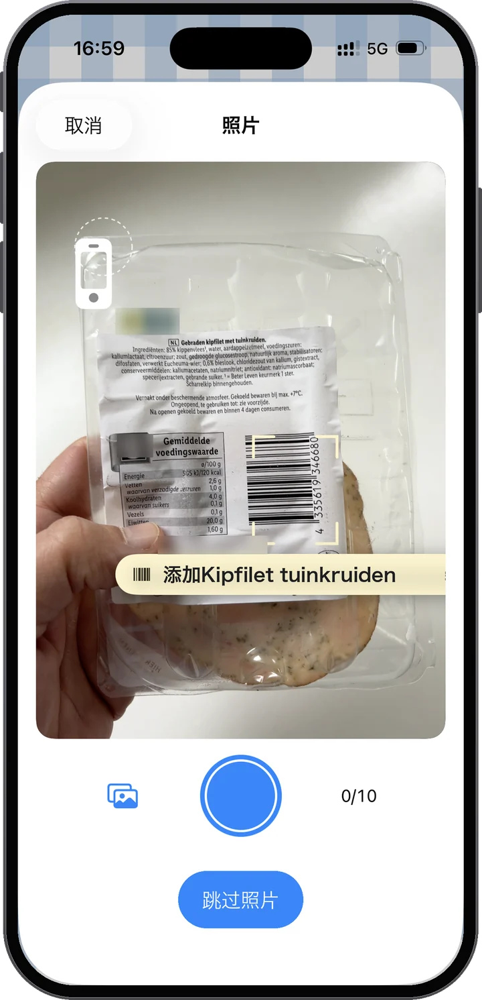
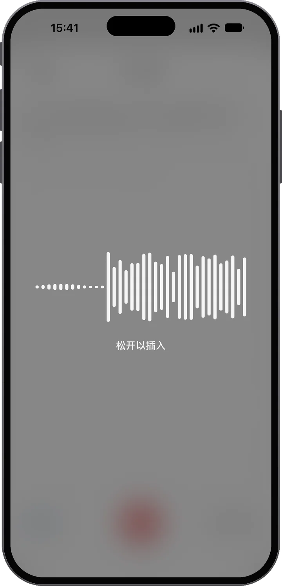
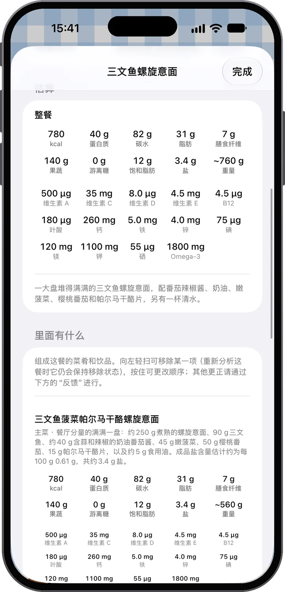
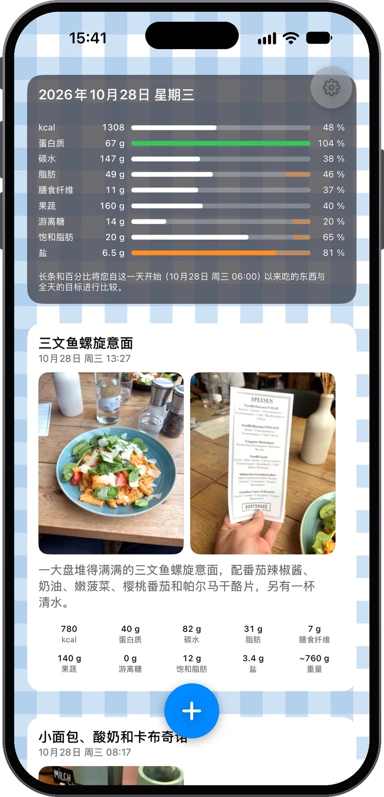
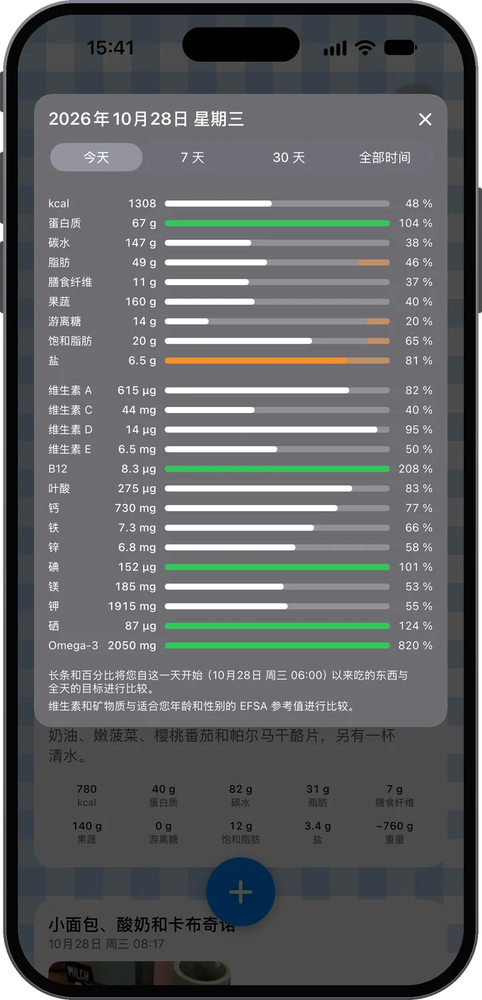

看见它。读懂它。
拍下你的餐食，Food Moments 就把它变成你这一天的动态：照片在前，里面究竟有什么就在下方。照片拍不出的，说出来就好——下一餐之前，先看看今天进行到哪儿了。

几乎不费力气，却收获满满的了解。
拍下你的食物——一张或几张都行。再补充一点背景：打字写个备注，或者按住麦克风直接说。“两个煎蛋和那个小面包”，这样就够了。
这一餐会为你分析好：能量、蛋白质、碳水、脂肪、膳食纤维、果蔬、游离糖和盐，一道菜一道菜地列出，并坦白告诉你估算有多可靠——你还能看到它在你这一天里的位置。
一天下来，你的动态逐渐丰富，每日长条也随之增长。你能看到今天的饮食是怎样展开的，以及自己现在的位置——在选择下一餐之前，而不是之后。
一整天都吃得挺均衡？你的长条会告诉你。那就放心吃甜点——吃得心安理得：你依然在目标之内，这是你自己的数据说的，不是瞎猜。

照片优先
照片是最主要的依据。分析会读懂菜品和分量——画面里有营养成分表或条形码的话，连它们也会读。而且不必只拍一张：一餐最多可以有十张照片。今晚下厨？边做边拍食材，最后拍成品——分析会把一切汇总起来。

或者扫条形码
把相机对准条形码，Food Moments 就能找到这个产品和它的营养成分表，不用拍照。扫几个产品，它们就组成一餐；再拍一张你做的菜，分析会采用标签上的精确数值。产品数据来自 Open Food Facts。

再加上你的话——随你喜欢
很多时候照片就够了。不够的时候——比如果昔里放了什么、那一锅你实际吃了多少——就用你自己的话补充。喜欢打字就打字。不过真的可以试试麦克风：这里的听写用的是最新的语音模型，松手片刻后，你的话就出现在备注里，即使在嘈杂的街头也很可靠。无论哪种方式，你说的话永远比照片更算数——这个应用听你的。
鸡肉沙拉、一片涂黄油的酸种面包和半杯橙汁。
组成这一餐的菜品和饮品。滑动可删除，按住可调整顺序——其他更正都通过“反馈”进行。
食物很清楚；分量则只能从照片中判断。请将这些数字视为接近值而非精确值——说明分量会让它们更准确。
不止热量的营养
每个 Food Moment 都会像菜单那样拆解——每道菜、每杯饮品都有自己的分量和数字，再汇总成总计：能量、蛋白质、碳水、脂肪、膳食纤维、果蔬、游离糖、盐，以及估算的重量。应用还会坦白告诉你它有多大把握，让你知道什么时候补一句语音备注就能让估算更准确。

你的专属动态
你的正餐、饮品和零食随着一天的推进陆续出现——照片在前，就像一份从营养角度看的个人动态。最上方的每日卡片实时记录进度：每根长条都把你目前吃下的和全天目标相比，所以早上长条短并不是失败——而是还有余地。每个目标都注明了公开来源：每个目标从何而来。


吃甜点吧。享受那块披萨。重要的是知道它意味着什么——放在你这一天的背景里——然后带着更充分的信息做下一个决定。
我们的信念
好的食物带来能量、支持健康，让日常生活更美好。同时，没有人能永远吃得完美——Food Moments 让这件事变得再正常不过。这是一款为在乎自己的人打造的应用，而不是因为你吃东西就惩罚你的应用。
隐私，从设计开始
账户只需你的邮箱——无需姓名，无需密码。你的餐食存放在欧盟，随时可以下载或删除。
你的账户只是你的邮箱地址。没有密码，没有姓名——用一次性验证码登录，你的餐食、照片和历史记录保存在你位于欧盟服务器上的账户里，换新 iPhone 也能全部找回。照片和备注会发送给 AI，用于你所要求的营养分析——须经你同意，且绝不用于建立画像；只有你打开帮助改进 Food Moments，我们才会亲自查看你的餐食。听写同样留在欧盟：它有单独的同意，只询问一次，其语音服务和分析一样在欧盟运行——应用发送的任何内容都不会离开欧盟。随时可以在“设置”中下载全部数据或删除账户。详情请见隐私政策，语言通俗易懂。

前 14 天免费。在试用结束前于你的 Apple 账户中取消，就不会产生任何费用。